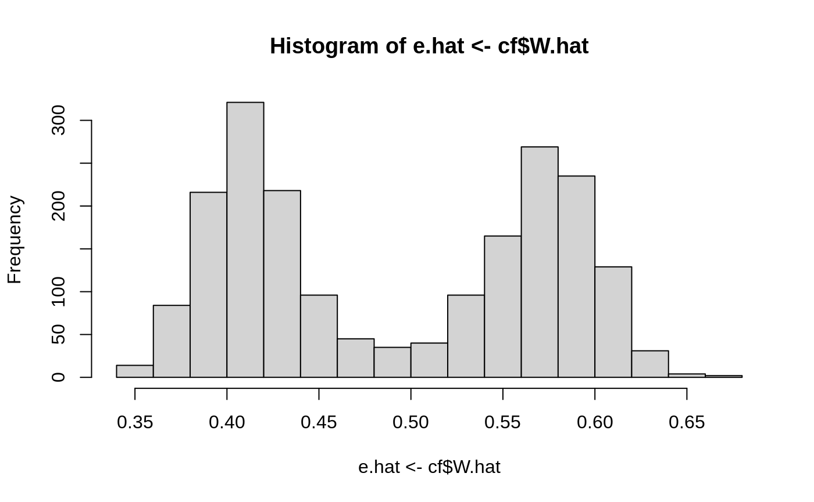
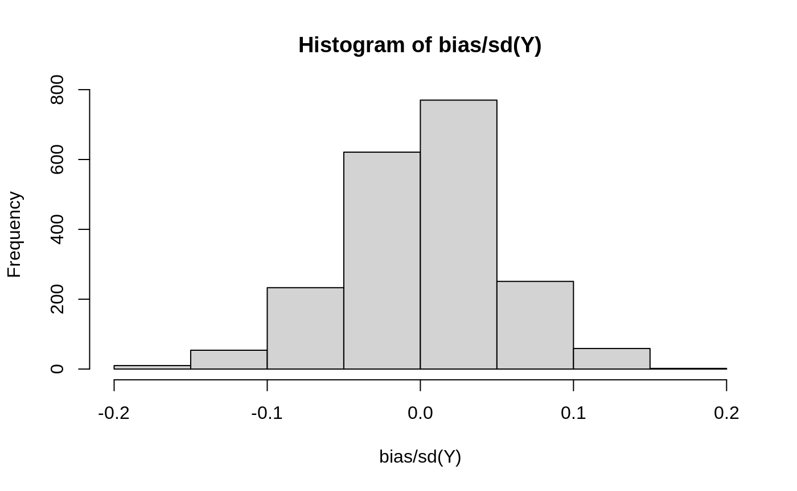

Assessing overlap
Two common diagnostics to evaluate if the identifying assumptions behind grf hold is a propensity score histogram and covariance balance plot.
n <- 2000 p <- 10 X <- matrix(rnorm(n * p), n, p) W <- rbinom(n, 1, 0.4 + 0.2 * (X[, 1] > 0)) Y <- pmax(X[, 1], 0) * W + X[, 2] + pmin(X[, 3], 0) + rnorm(n) cf <- causal_forest(X, Y, W)
The overlap assumption requires a positive probability of treatment for each \(X_i\). We should not be able to deterministically decide the treatment status of an individual based on its covariates, meaning none of the estimated propensity scores should be close to one or zero. One can check this with a histogram:
hist(e.hat <- cf$W.hat)

One can also check that the covariates are balanced across the treated and control group by plotting the inverse-propensity weighted histograms of all samples, overlaid here for each feature (done with ggplot2 which supports weighted histograms):
plot.df <- data.frame(X, W = as.factor(W), IPW = ifelse(W == 1, 1 / e.hat, 1 / (1 - e.hat))) plot.df <- reshape(plot.df, varying = list(1:p), v.names = "X", direction = "long", times = factor(paste0("X.", 1:p), levels = paste0("X.", 1:p))) ggplot(plot.df, aes(x = X, weight = IPW, fill = W)) + geom_histogram(alpha = 0.5, position = "identity", bins = 30) + facet_wrap( ~ time, ncol = 2)

Assessing fit
The forest summary function test_calibration can be used to asses a forest’s goodness of fit. A coefficient of 1 for mean.forest.prediction suggests that the mean forest prediction is correct and a coefficient of 1 for differential.forest.prediction suggests that the forest has captured heterogeneity in the underlying signal.
test_calibration(cf) #> #> Best linear fit using forest predictions (on held-out data) #> as well as the mean forest prediction as regressors, along #> with one-sided heteroskedasticity-robust (HC3) SEs: #> #> Estimate Std. Error t value Pr(>t) #> mean.forest.prediction 1.01173 0.12993 7.7867 5.48e-15 *** #> differential.forest.prediction 1.19326 0.10122 11.7885 < 2.2e-16 *** #> --- #> Signif. codes: 0 '***' 0.001 '**' 0.01 '*' 0.05 '.' 0.1 ' ' 1
Another heuristic for testing for heterogeneity involves grouping observations into a high and low CATE group, then estimating average treatment effects in each subgroup. The function average_treatment_effect estimates ATEs using a double robust approach:
tau.hat <- predict(cf)$predictions high.effect <- tau.hat > median(tau.hat) ate.high <- average_treatment_effect(cf, subset = high.effect) ate.low <- average_treatment_effect(cf, subset = !high.effect)
Which gives the following 95% confidence interval for the difference in ATE
ate.high[["estimate"]] - ate.low[["estimate"]] + c(-1, 1) * qnorm(0.975) * sqrt(ate.high[["std.err"]]^2 + ate.low[["std.err"]]^2) #> [1] 0.6104840 0.9944664
For more details on these two checks, see section 2.2 in Athey and Wager (2019).
Athey et al. (2017) suggests a bias measure to gauge how much work the propensity and outcome models have to do to get an unbiased estimate, relative to looking at a simple difference-in-means: \(bias(x) = (e(x) - p) \times (p(\mu(0, x) - \mu_0) + (1 - p) (\mu(1, x) - \mu_1)\).
p <- mean(W) Y.hat.0 <- cf$Y.hat - e.hat * tau.hat Y.hat.1 <- cf$Y.hat + (1 - e.hat) * tau.hat bias <- (e.hat - p) * (p * (Y.hat.0 - mean(Y.hat.0)) + (1 - p) * (Y.hat.1 - mean(Y.hat.1)))
Scaled by the standard deviation of the outcome:

See Athey et al. (2017) section D for more details.
References
Athey, Susan and Stefan Wager. Estimating Treatment Effects with Causal Forests: An Application. Observational Studies, 5, 2019. (arxiv)
Athey, Susan, Guido Imbens, Thai Pham, and Stefan Wager. Estimating average treatment effects: Supplementary analyses and remaining challenges. American Economic Review, 107(5), May 2017: 278-281. (arxiv)